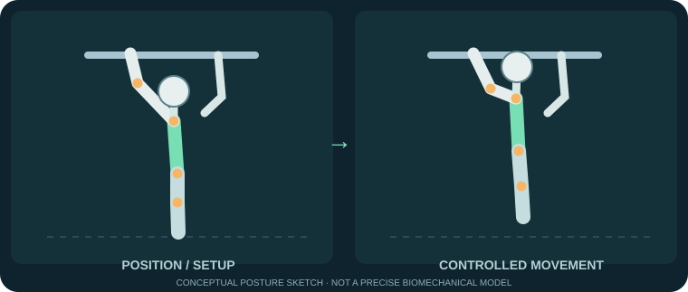

Exercise encyclopedia / Pull
Pull-up
From a controlled hang, pull toward the bar without kicking, then lower smoothly.
Movement illustration

How to perform it
- Use a secure overhead bar with a comfortable grip.
- Begin with a controlled hanging shoulder position.
- Pull through elbows toward ribs while keeping legs quiet.
- Lower under control to a safe finish; avoid a forced dead hang if uncomfortable.
Breathe continuously and use a range that feels controlled and comfortable for your body.
Why this movement matters
Pulling movements involve the back and elbow flexors working together with the shoulder girdle. Grip, body angle and assistance change the relative contribution of these regions.
Progression checkpoint
Add repetitions only while the same smooth range is maintained.
Equipment and safety
Only use verified load-bearing equipment; accidental falls and unstable anchors are avoidable hazards.
Problem solving
Common mistakes & corrections
Correction: Reduce difficulty with assistance and smaller controlled sets.
Correction: Keep neck neutral and focus on a reproducible range.
Training progression
Find your next variation
This is one possible route from a lower-demand version to a more demanding version. You can switch back whenever needed; these steps are not fixed tests or guarantees.
Readiness guidance: Add repetitions only while the same smooth range is maintained.
Build a practice
Where this fits in a program
Pull-up is a pull exercise. Pair it with movements from other patterns over the training week, and choose sets or hold times you can recover from. See the Balanced full-body program for adaptable examples; there is no universally correct repetition target.
Calisthenics Atlas editorial guide · November 2026 · Original conceptual artwork · General audience education